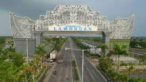
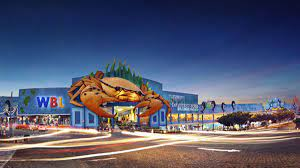

Jejak Sejarah yang Membanggakan

Sejarah Kabupaten Lamongan membentang hingga ke zaman kerajaan Majapahit. Lamongan merupakan pusat perdagangan yang strategis di pesisir utara Jawa Timur sejak ratusan tahun yang lalu. Nama "Lamongan" sendiri diyakini berasal dari kata "lamang," yang mengacu pada bendungan atau sungai yang melintasi daerah ini. Dalam perjalanan sejarahnya, Lamongan telah menjadi saksi dari berbagai peristiwa penting dalam sejarah Indonesia.
Jejak sejarah ini tercermin dalam warisan budaya dan arsitektur yang masih terjaga hingga hari ini, memperkaya pengalaman wisata sejarah di kabupaten ini. Warisan sejarah yang mengagumkan ini menjadi daya tarik utama bagi para wisatawan yang ingin menyelami lebih dalam kekayaan budaya dan sejarah Indonesia, memberikan pengalaman yang mendalam dan tak terlupakan.
Warisan sejarah yang mengagumkan ini menjadi daya tarik utama bagi para wisatawan yang ingin menyelami lebih dalam kekayaan budaya dan sejarah Indonesia, memberikan pengalaman yang mendalam dan tak terlupakan.
Kekayaan Alam yang Mengagumkan

Secara geografis, Lamongan memiliki keindahan alam yang luar biasa. Terletak di dekat pantai utara Jawa Timur, kabupaten ini menawarkan pantai-pantai yang menakjubkan dengan pasir putihnya yang lembut dan air laut yang jernih. Pantai Paciran, Pantai Tanjung Kodok, dan Pantai Boom adalah beberapa destinasi pantai terkenal yang menjadi favorit para wisatawan. Selain pantai, Gunung Lamongan juga menjadi daya tarik utama bagi para pendaki dan pecinta alam.
Dengan pemandangan alam yang spektakuler dan udara yang segar, pendakian ke puncak Gunung Lamongan memberikan pengalaman petualangan yang memuaskan bagi para pengunjungnya. Keindahan alam yang memukau di Kabupaten Lamongan memikat hati para pengunjung, menawarkan petualangan alam yang tak terlupakan dan kecantikan alam yang mempesona.
Keindahan alam yang memukau di Kabupaten Lamongan memikat hati para pengunjung, menawarkan petualangan alam yang tak terlupakan dan kecantikan alam yang mempesona.
Keanekaragaman Budaya yang Menyala
Kabupaten Lamongan juga kaya akan kebudayaan tradisional yang masih dijaga dengan baik oleh masyarakat setempat. Budaya Jawa yang kental terasa dalam berbagai aspek kehidupan sehari-hari, mulai dari seni pertunjukan seperti wayang kulit, tarian Jawa, hingga musik gamelan yang merdu. Selain itu, adat istiadat dan tradisi-tradisi lokal masih dihargai dan dilestarikan.
Ini semua menambah warna dan kehangatan dalam kehidupan masyarakat Lamongan. Keanekaragaman budaya yang terpelihara dengan baik di Kabupaten Lamongan menarik minat para wisatawan untuk memahami dan merasakan kekayaan budaya Indonesia yang autentik.
Keanekaragaman budaya yang terpelihara dengan baik di Kabupaten Lamongan menarik minat para wisatawan untuk memahami dan merasakan kekayaan budaya Indonesia yang autentik.
Kuliner yang Menggugah Selera
Tak dapat dipungkiri, kuliner khas Lamongan juga merupakan daya tarik tersendiri bagi para wisatawan. Rujak cingur, soto Lamongan, tahu campur, ikan bakar, dan aneka hidangan laut segar menjadi menu wajib yang harus dicicipi saat berkunjung ke sini. Rasa autentik dan cita rasa yang lezat membuat kuliner Lamongan menjadi salah satu yang terbaik di Jawa Timur.
Nikmati pengalaman kuliner yang menggugah selera di Kabupaten Lamongan, dan rasakan kenikmatan dari setiap hidangan yang disajikan dengan keahlian dan cinta dari para pengrajin kuliner lokal.
Rasakan sensasi kenikmatan kuliner khas Lamongan yang tak tertandingi, dan jelajahi ragam cita rasa yang memanjakan lidah di setiap sudut kabupaten ini.
Destinasi Wisata yang Beragam

Selain pantai dan gunung, Lamongan juga menawarkan berbagai destinasi wisata lainnya yang menarik. Taman Wisata Alam Mangrove Wonorejo, Taman Nasional Bromo Tengger Semeru, dan berbagai tempat wisata religi seperti Makam Sunan Drajat dan Makam Sunan Sendang Duwur adalah beberapa contoh destinasi menarik yang patut dikunjungi.
Jelajahi keindahan alam dan kekayaan budaya Lamongan melalui berbagai destinasi wisata yang beragam, dan biarkan diri Anda terpesona oleh pesona alam dan budaya yang menakjubkan.